En la primera actividad se hace recordatorio al semestre pasado mediante actividades con el uso del JavaScript.
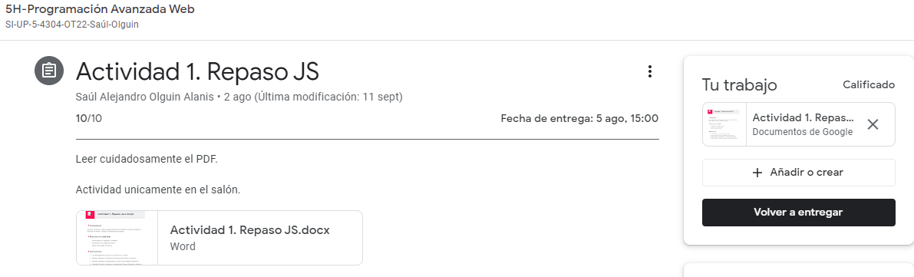
En la segunda actividadse hacia repaso también, o comos vimos en el semestre pasado, solo que en este caso de formularios básicos.
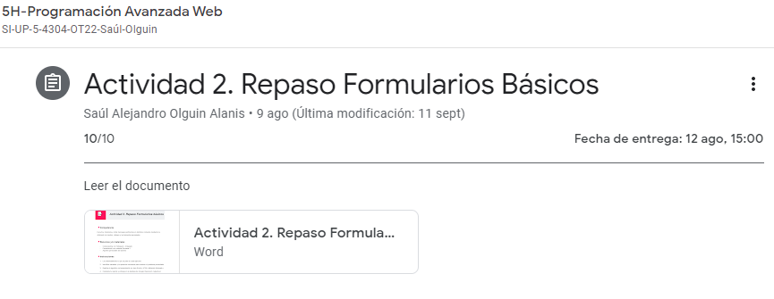
En esta actividad se usa el JavaScript porque nos permite hacer estucutras incondicionales.
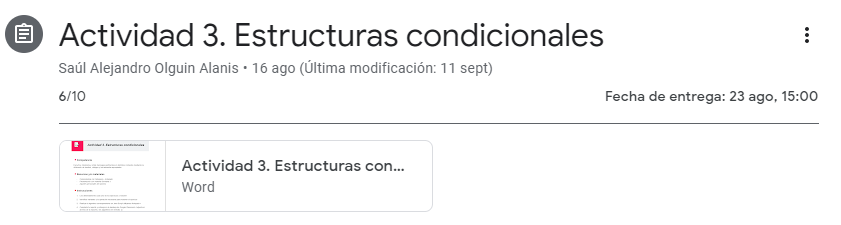
Una serie de actividades que tienen por objetivo hacer un ciclo.
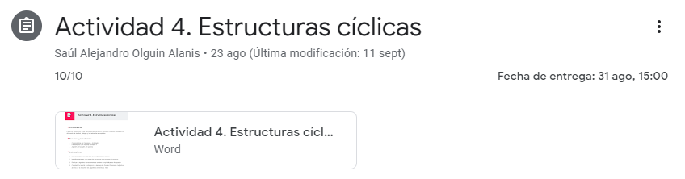
Ejercicios con ciclos anidados que consisten en hacer series numéricas.
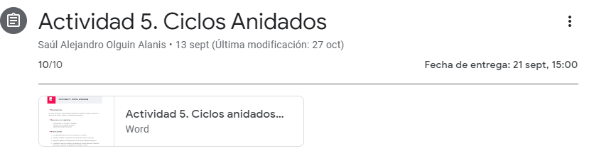
Hacer arreglos que nos ayudana a hacer listas u ordernar letras y números.
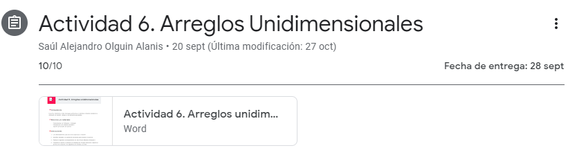
Funciones predefinidas en JS para hacer ooperaciones matemáticas.
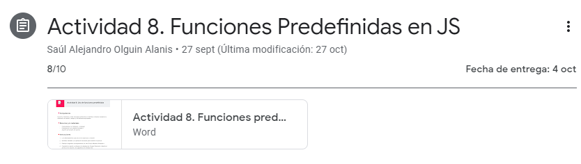
Consiste en hacer un formulario con funciones de argumento.
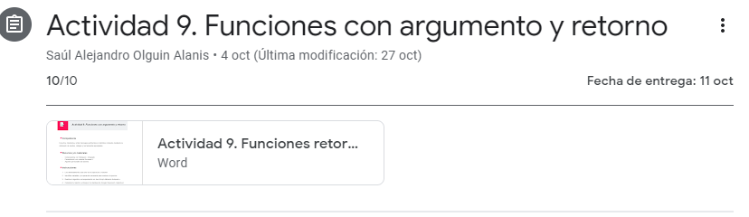
Formulario con argumento y retorno.
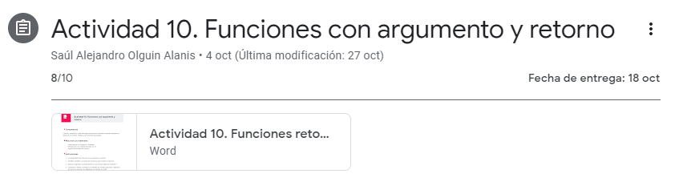
Ejercicios que nos piden hacer sombras y ciertos ejectos que nos ayudan en los textos.
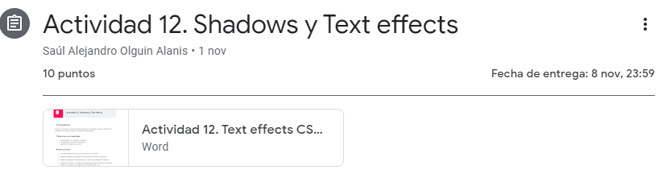
Formatos que nos ayudan a la hora de poner imágenes.
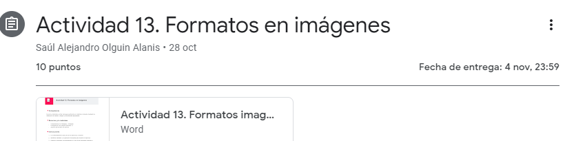
Hacer un menú de opciones.
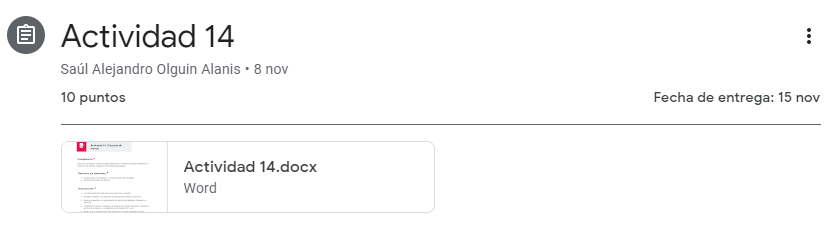